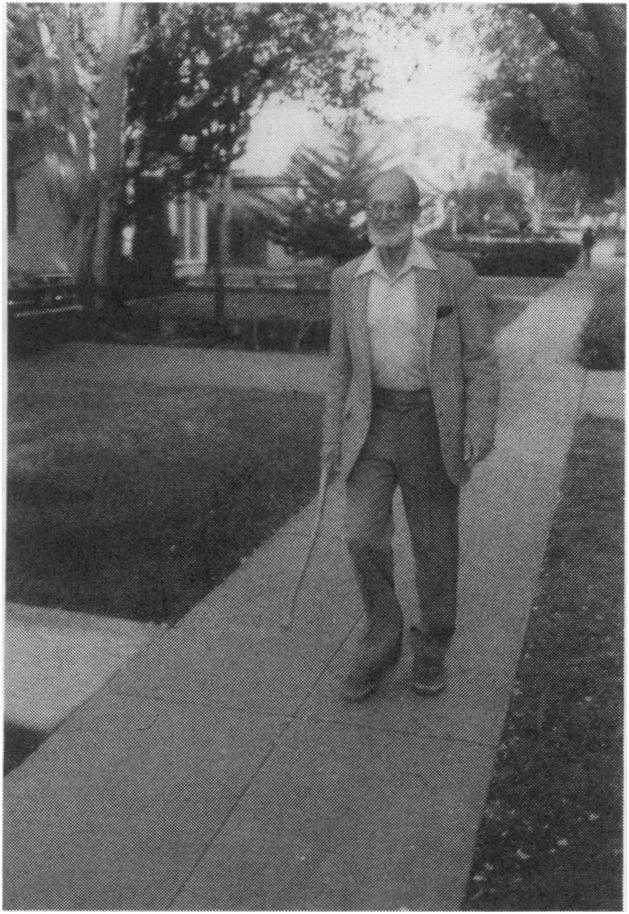
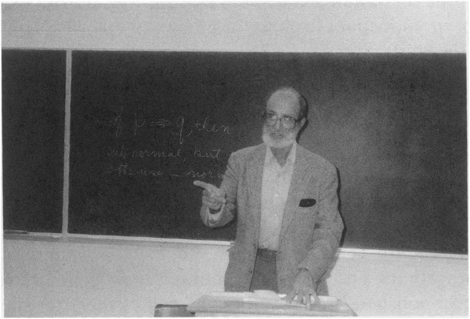

What is Teaching?
Do you remember the first time you ever taught? The first day I taught was September 18, 1935—which was slightly over 58 years ago, or, if you want to be very precise, exactly 21,303 days ago today. Does that, I wonder, make me the person with the longest teaching experience in this room? Being aware of the length of my servitude, the authorities in charge of our meeting today deduced that I know, or, in any event, I ought to know what teaching is, and they instructed me to tell you.
The course I taught in 1935 was called freshman algebra; its purpose was to reveal the secrets of quadratic equations (for which there was a formula) and parentheses (which were abominable entities and had to be eliminated at the drop of a hat). The course met at 8:00 in the morning, five days a week—yes, five days, Monday through Friday, inclusive; my pay was $45.00 a month. Incidentally, I was living at the time in an old-fashioned, comfortable, large, 5-room apartment, within five minutes walk of the campus; the rent was $45.00 a month.
I had no fear of teaching. Stage fright, yes; fear, no. Stage fright, in the sense of being keyed up and slightly nervous is something that has always been with me six minutes for each new class: five minutes before it first meets and one minute after it starts. The same is true of colloquium talks and all other kinds of public appearances.
Even though there was still a lot I had to learn about teaching, I thought I could cope with it. I have always been surprised by beginners who say they don’t know how to teach yet. Haven’t they already spent almost twenty years under the influence of teachers, and haven’t they noticed that some techniques seem to work well and others are just annoying, and haven’t they ever muttered to themselves “I could explain that a lot better”? I had had some bad teachers along with the good ones, and I thought I knew what not to do—I marched to my first class confidently with my head held high and with the stage fright barely noticeable under my eagerness to get on with it.
The ages of my students were around 17 and 18; I was a wise old graduate student aged 19. They believed what I told them. Some of them were good and some of them were hopeless. The only one whose name I’ll never forget (it was not Drossin, but let’s call him that) was one of the hopeless ones. Attendance spotty, homework missing or weak, midterm exams around D minus, the final exam might have helped him pass the course, but I didn’t have much faith and neither did he. The Saturday evening before the final a small party at my house was interrupted by the doorbell—it was Drossin. Could he speak to me a minute, privately? Somewhat suprised, I took him to an unused room, and asked him what’s up. I was a graduate student, wasn’t I? And perhaps I wasn’t too well off, was I? And this course was important for him, so he’d appreciate it if I would help him pass it, and he’d make it worth my while—he’d give me five dollars. Half a week’s rent, a week’s food! I was too surprised to be angry, but I told him to go away. I returned to the party and told my friends that I had just learned how much I was worth. Next Monday, Drossin’s paper was the first I graded. He flunked, with no margin for error.

Figure 1: Paul Halmos engaged in one of his favorite activities.
Well, what about telling you what teaching is? The more I tried to think what to say, the more I was being led to the conclusion that nobody cain’t never teach nobody nuttin’ nohow. I don’t really mean that, but I mean it a lot more than its opposite, and I thought I’d get your attention more quickly by making a crisp statement. I’ll spend some of the rest of my time telling you which part of that provocative crispness I really mean.
There are three types of knowledge that we commonly speak of as subjects for teaching or learning; they can be most effectively identified as what, how, and why.
To be educated means to remember something, to be able to use it, and to understand it. Frequently these three kinds of education are thought of as belonging to altogether different kinds of human activity, but ideally they are all present every time. Our memory knows that Napoleon was defeated at Waterloo, our muscles know that certain stretchings and bendings will cause our feet to alternate suitably so as to take us from the office to lunch, and our mind knows why three times five is the same as five times three.
Many students confuse education with memorization. They tend to think that if we know the boiling point of beer, the gestation period of elephants, the conjugation of French irregular verbs, and the population of Burma, together with many other such goodies about the moon, whales, protons, synapses, schizophrenia, and interest rates, then we are educated. A walking encyclopedia is, however, rarely an educated person. To a historian, history is not just a collection of facts but an organized understanding of how we got to be what we are; Waterloo is not just a fact, but, possibly, a tool to be used to avoid catastrophes in the future. To a chemist, chemistry is not just purple liquids in test tubes, but a scheme for prediction and a way of understanding the world—and the same sort of thing is true of the physicist, the astronomer, the psychologist, and the economist.
Sometimes education is oriented toward application, only application, and the result is just as wide of the mark. A linguist is not one who can speak strange languages, certainly not only that, and a cellist is not one who knows where to put the fingers of his left hand and at what angle to pull his right elbow back. Etymology and syntax for the one, and musicology and musicianship for the other play the role of the vitally necessary components of remembering and understanding.
The third sin, that of identifying education with ratiocination is rarer, but not unknown: the philosophers who, allegedly, don’t want to be burdened with or confused by mere facts, and the pure logicians and mathematicians who not only don’t want to put their thoughts to work but are even inclined to deny that that can be done. They are the ones guilty of the sin of giving short shrift to matter and muscle.
How then does one learn, and, more to the point here and now, how do we teach the what, the how, and the why? I have my prejudices about all of them, but I can claim professional training and experience about one of them only. I’ll wave at the other two, quickly, in passing.
As far as facts go, I am pretty much stumped. How can I learn Napoleon’s dates, the meaning of the Hungarian word “mell”, the number of rings around Saturn, or the percentage of hydrogen and oxygen in tap water? I can ask an expert, a teacher, by way of a book or a class room, or, when it is physically possible to do so, I myself can look. One trouble is that I might not know enough to look: my teacher has to tell me not only about Napoleon’s dates, but also about telescopes. The teaching of “what” abuts on the teaching of “how”—how to learn, how to look, how to perform experiments. The way to teach “what” splits into (1) tell ’em the facts, and (2) tell ’em how to get the facts.
How do we teach the how? How do we teach someone to swim, to play a musical instrument, or to speak a foreign language? One possible answer is: nohow. Don’t do nuttin’; just wait. Throw the kid into the water, put him on the piano bench, or abandon him in France, and go away. After all, humanity has fumbled its way to these things without any external guidance, and, arguably, the best way for an individual to learn them is to rediscover them for himself. (Incidentally, as far as language goes, is this idea related to Chomsky’s innate grammar?)
A somewhat different attitude to how-teaching is to regard the role of the teacher as that of a coach. To be sure, nobody can swim for me, nobody can play the piano with my fingers, and nobody can speak French for me, but somebody can save me an awful lot of time by showing me the right way right away. Once I have seen the crawl, heard the difference that fingering can make to the sound of a piece, or pronounced “an” while holding my nose, I have made hundreds of years of progress.
Does it help the student of swimming, of piano, of French to “understand” what he is doing? Some argue that it does not, that it hurts. (Once you start thinking about how you swim, how fast you should play a passage, or whether you should use the subjunctive, you are lost.) Others argue that all knowledge helps: the swimmer should understand the pertinent principles of physics, the pianist should see what the theory of harmony has to do with what he is doing, and the speaker should know grammar. You see where the latter view leads, don’t you? It says, in effect (and I am inclined to agree), that the teaching of how abuts on the why.
How, finally, do we teach why? How do we teach logic and mathematics, how do we teach abstract concepts and the relations among them, how do we teach intuition, recognition, understanding? How do we teach these things so that when we are done our ex-student can not only pass an examination by naming the concepts and listing the relations, but he can also get pleasure from his insight, and, if he is talented and lucky, be vouchsafed the discovery of a new one? The only possible answer that I can see is: nohow. Don’t do nuttin’; just wait. The only way I know of for an individual to share in humanity’s slowly acquired understanding is to retrace the steps. Some old ideas were in error, of course, and some might have become irrelevant to the world of today, and therefore no longer fashionable, but on balance every student must repeat all the steps—ontogeny must recapitulate philogeny every time.
What then can we do to earn a living? Can a mathematician of today, for instance, be of any use to the budding mathematicians of tomorrow? My answer is yes. What we can do is to point a student in the right directions, challenge him with problems, and thus make it possible for him to “remember” the solutions. Once the solutions start being produced, we can comment on them, we can connect them with others, and we can encourage their generalizations. The worst we can do is to give polished lectures crammed full of the latest news from fat and expensive scholarly journals and books—that is, I am convinced, a waste of time.
You recognize, of course, that I seem to be advocating what is sometimes called the Socratic or do-it-yourself or discovery method, or, especially in Texas, the Moore method. The method is not to tell students but to ask them, and, better yet, to inspire them to ask themselves—make students solve problems, and better yet, train students, by example, encouragement, and generous reinforcement, to construct problems of their own. Problem solving—that is the most highly touted current shibboleth, and that is the flag that I too want to wave. The flag should be kept waving; the important ideas deserve to be emphasized over and over again.
The most effective way to teach mathematics by problem solving is to keep challenging students with problems that are just barely within their reach. One way to inculcate the historical attitude, for instance, is to ask a question that Archimedes didn’t have the most efficient tools to answer, and dare students to rediscover Archimedes’s research. The best meaning to give to the phrase “undergraduate research” in mathematics is to guide an undergraduate to re-do the research of Leibniz (or Lefschetz).
Everybody loves a puzzle. The ones that appear in the Sunday supplement of the local newspaper or that the telephone company sometimes sends along with their bill, get read and discussed almost as much as the comics and the sports page. The most popular and most widely read part of the American Mathematical Monthly is its problem department. Problems is the way to go.
People much prefer stimulation to inundation. Don’t snow them; tease them. Puzzles, yes—preachments, no. The problem method of teaching is the best for students, and, once its technical difficulties are overcome, offers the greatest stimulation and reward to the faculty also.
Have students sometimes asked you, when you whizzed through the derivation of the quadratic formula (or the quotient rule for derivatives, or the triangularization of complex matrices), possibly in a tone of grudging admiration, “How do you remember all that stuff?” The answer, of course, is that you don’t remember it: you understand it. If students were guided through research that leads them to discover that completing the square does something useful to the equation \(2x^2 + 9x + 10 = 0\), they’d have a chance to understand it much better than if they were just shown the technique and then made to practice it a hundred times. The problem method is, I am convinced, the way to teach everything. It teaches technique and understanding, it teaches research and problem solving, it teaches the way nature taught us (about fire and carpentry and the stars and weaving) before we invented teachers.

Figure 2: Paul Halmos.
The method doesn’t begin by proving Theorem 1. It begins with questions: what is true, what do the examples we can look at suggest? It doesn’t say “look, here’s how it’s done”, it asks “how can it be done?” It teaches the right attitude toward the solution of all problems. The problems that we came here to solve can be solved—all problems can be solved—and the teaching of problem solving is the way to set about solving them. If we could teach every teacher to teach every course as a problem course, then one generation from now, in twenty five years, say, the need for talks such as this one would no longer exist. All we have to do is find out how to do that, and we can adjourn.
Let me emphasize one thing I casually dropped along the way: I spoke of the way to begin. The way to begin all teaching is with a question. I try to remember that precept every time I begin to teach a course, and I try even to remember it every time I stand up to give a lecture—and, you may recall, I remembered it and acted on it today.
Another part of the idea of the method is to concentrate attention on the definite, the concrete, the specific. Once a student understands, really and truly understands, why \(3 \times 5\) is the same as \(5 \times 3\), then he quickly gets the automatic but nevertheless exciting and obvious conviction that “it goes the same way” for all other numbers. We all seem to have an innate ability to generalize (shades of Chomsky again?). The teacher’s function is to call attention to a concrete special case that hides (and, we hope, ultimately reveals) the germ of the conceptual difficulty.
One time I used the so-called Moore method in an honors class in linear algebra with about 15 students. The first day of class I handed each student a set of 19 pages stapled together and I told them that they now held the course in their hands. Those 19 pages contained the statements of fifty theorems, and nothing else. There were no definitions, there was no motivation, there were no explanations—nothing but fifty theorems, stated correctly but brutally, with no expository niceties. That, I told them, is the course. If you can understand, state, prove, exemplify, and apply those fifty theorems, you know the course, you know everything that this course is intended to teach you.
I will not, I told them, lecture to you, and I will not prove the theorems for you. I’ll tell you, bit by bit as we go along, what the words mean, and I might from time to time indicate what this subject has to do with other parts of mathematics, but most of the classroom work will have to be done by you. I am challenging you to discover the proofs for yourselves, I am putting you on your honor not to look them up in a book or get outside help in any other way, and then I’ll ask you to present in class the proofs you have discovered. The rest of you, the ones who are not doing the presenting, are supposed to stay on your toes mercilessly—make sure that the speaker gives a correct and complete proof, and demand from the speaker whatever else is appropriate for understanding (such as examples and counterexamples.)
They stared at me, bewildered and upset—perhaps even hostile. They had never heard of such a thing. They came here to learn something and now they didn’t believe they would. They suspected that I was trying to get away with something, that I was trying to get out of the work I was paid to do. I told them about R. L. Moore, and they liked that, that was interesting. Then I gave them the basic definitions they needed to understand the statements of the first two or three theorems, and said “class dismissed”.
It worked. At the second meeting of class I said, “O.K., Mr. Jones, let’s see you prove Theorem 1”, and I had to push and drag them along before they got off the ground. After a couple of weeks they were flying. They liked it, they learned from it, and they entered into the spirit of research—competition, discouragement, glory, and all.
If you are a teacher and a possible convert to the Moore method, don’t make the mistake that my students made: don’t think that you, the teacher, will do less work that way. It takes me a couple of months of hard work to prepare for a Moore course, to prepare the fifty theorems, or whatever takes their place. I have to chop the material into bite-sized pieces, I have to arrange it so that it becomes accessible, and I must visualize the course as a whole—what I can hope that they will have learned when it’s over. As the course goes along, I must keep preparing for each meeting: to stay on top of what goes on in class, I myself must be able to prove everything. In class I must stay on my toes every second. I must not only be the moderator of what can easily turn into an unruly debate, but I must understand what is being presented, and when something fishy goes on I must interrupt with a firm but gentle “Would you explain that please?—I don’t understand.”
Let me conclude by calling attention to a curious aspect of what I am recommending, an aspect visible in my urging attention to the concrete special case in order to understand the sweeping broad generalization. In effect I am saying that we do not, we cannot understand a vacuum—what we understand is always, in a sense, a fact—and, therefore, just as what cannot be taught without how, and how cannot be taught without why, the question has come full circle around to its start, and it turns out that why cannot be taught without what.
Facts, methods, and insights—all are essential to all of us, all enter all our subjects, and our principal job as teachers is to sort out the what, the how, and the why, point the student in the right direction, and then, especially when it comes to the why, stay out of his way so that he may proceed full steam ahead.
Having expressed my strong views about why we should teach problem courses, I call your attention to my major omission: I haven’t said a single word about how to do that. How, exactly, does one go about teaching a problem course in freshman calculus, or, for that matter, in freshman rhetoric, or junior history, or graduate astronomy? I don’t pretend to know all the answers, but I have been working at finding them for many years. If you extended my lecture time by another hour or so, or, to be more realistic, by another month or so, I could try to tell you about some of the techniques that I have luckily blundered into. My presentation today was intended to touch briefly on the “why” of such teaching, not the “how”. That will have to wait for our next meeting—just tell me when and where it is, and I’ll start packing my bag right away.